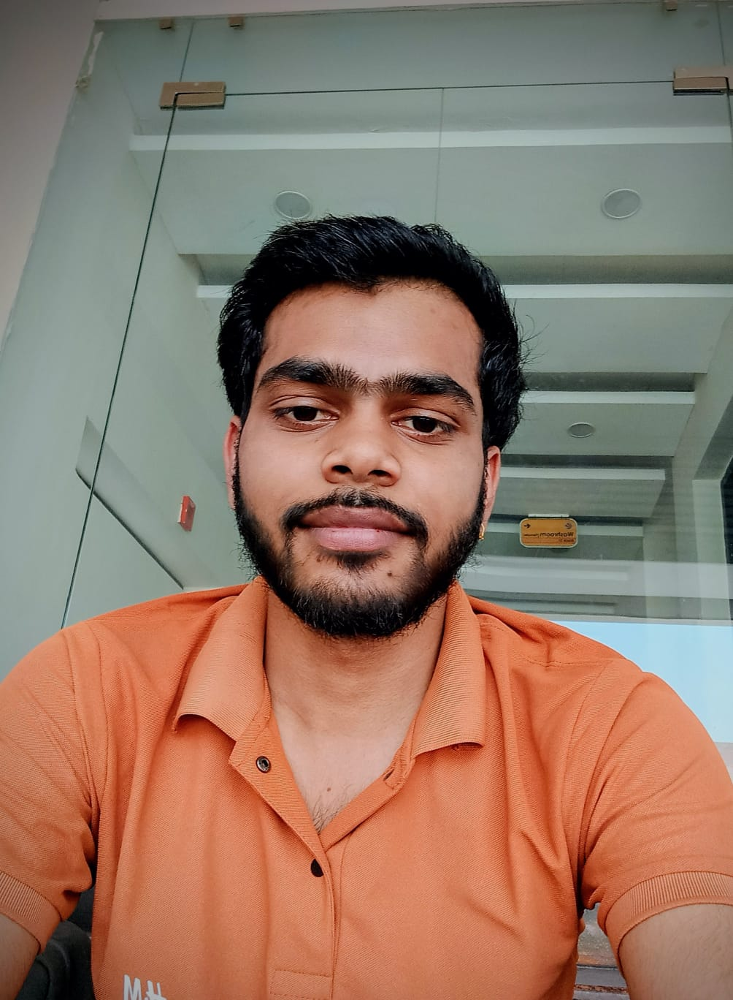

B.Tech Computer Science & Engineering · Lovely Professional University · Phagwara, India
I design and build reinforcement learning systems, autonomous drone intelligence, and self-optimizing robotic control architectures. My current research includes radar-evasive navigation for micro-UAVs, vision-guided drones for precision agriculture, and LLM-driven agents that learn to repair code through structured reward design — each one engineered to be measurable, production-grade, and grounded in rigorous mathematics.
This work has produced one published patent, a second filed, two authored books, and active submissions under international conference review. I build at the pace of a small lab — moving ideas from concept to working systems, then documenting them rigorously enough to publish.
Radar deception techniques for micro-UAVs enabling autonomous evasion of detection while maintaining precision navigation. Combines signal processing, reinforcement learning-based control, and embedded systems design.
AI drone system for automated detection and targeted treatment of crop diseases. Integrates real-time computer vision, precision spraying control, and edge inference for field deployment. Cleared Phase 1 of international conference review. Related work: Cost-Optimized AI Drone for Smart Detection and Management of Crop Diseases.
Self-optimizing control architecture for robotic systems that autonomously adapts to changing operational environments. Combines reinforcement learning with real-time sensor fusion for robust, model-free control without manual re-tuning.
Networked agent applying lifelong reinforcement learning to adapt personalization across multimodal e-commerce signals. Addresses catastrophic forgetting and multi-objective reward trade-offs in live recommendation settings.
The kind of idea that does not come along often — a security architecture different enough from existing approaches that, if built right, it could reset how an entire problem class is solved. Comparable in ambition to the step-changes that defined breakthrough work at labs like Meta AI: not an incremental improvement, but a different starting premise. Full architecture and implementation details are copyright-protected and withheld until the right partner is found.
If you lead a research lab, security company, or fund and want to build this for real — I'm looking for exactly that partner. Serious enquiries only.
A model-free control architecture enabling robotic systems to self-tune in real time across changing operational environments.
A drone-mounted system combining computer vision and precision actuation for early-stage detection and targeted treatment of crop disease.
Mar 2026 – Apr 2026 · Meta PyTorch Open-Env Hackathon
Gymnasium-compatible RL environment with a 10-action debugging framework, 5-signal reward MLP, resource-constrained sandbox, versioned REST API, PLR curriculum scheduler, and SWE-Bench adapter. Supports 500+ mutation-generated tasks across 11 bug categories. GRPO fine-tuning for Qwen2.5 and Llama 3 with automated DPO preference collection.
Aug 2025 – Oct 2025
Full-stack agritech platform with ensemble ML (Random Forest + Gradient Boosting), 92% crop prediction accuracy. FastAPI microservices with Redis caching achieving sub-200ms latency, JWT/OAuth2 authentication, and a multilingual interface.